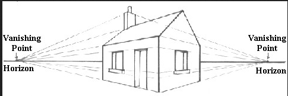

The below image is an example of vanishing points on a HOUSE VIEW:

This is an example of the vanishing point on a one-point perspective
In graphical perspective, a vanishing point is a point in the image plane where the projections (or drawings) of a set of parallel lines in space intersect. When the set of parallels is perpendicular to the picture plane, the construction is known as one-point perspective and their vanishing point corresponds to the oculus or eye point from which the image should be viewed for correct perspective geometry. Traditional linear drawings use objects with one to three sets of parallels, defining one to three vanishing points.